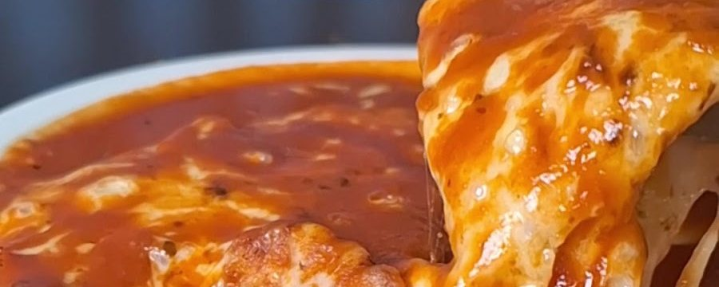
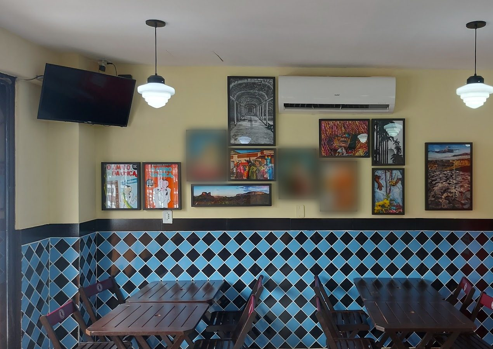
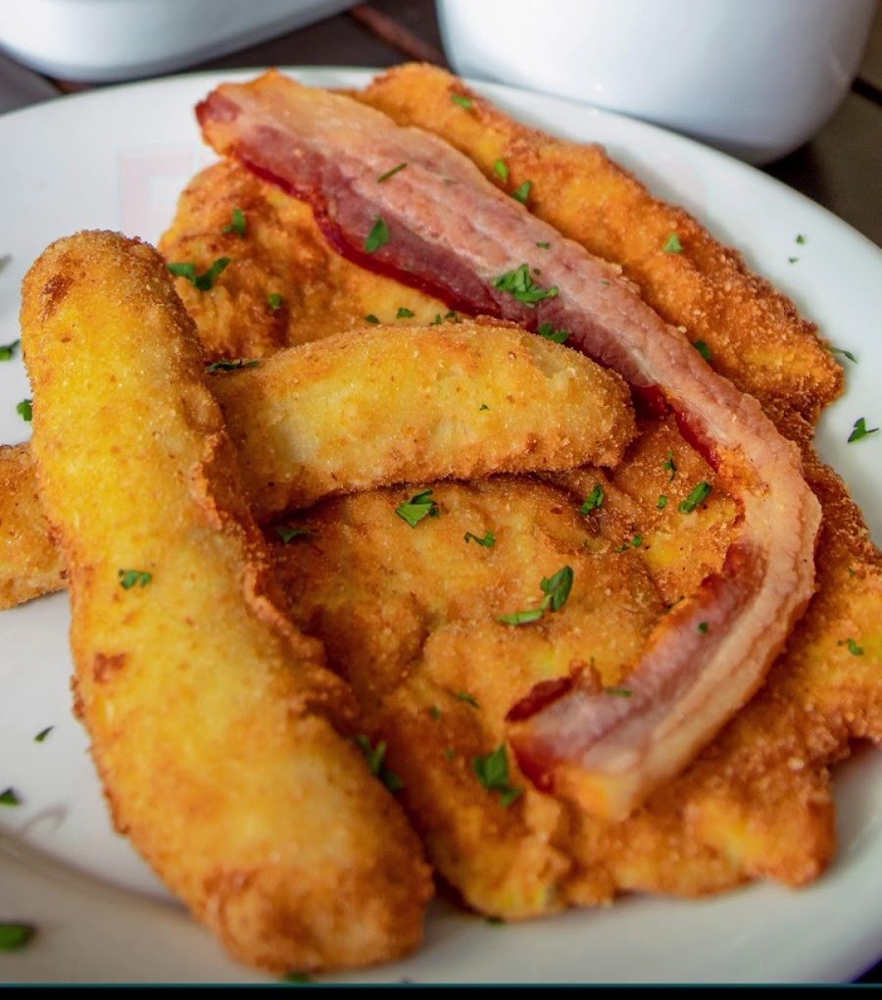
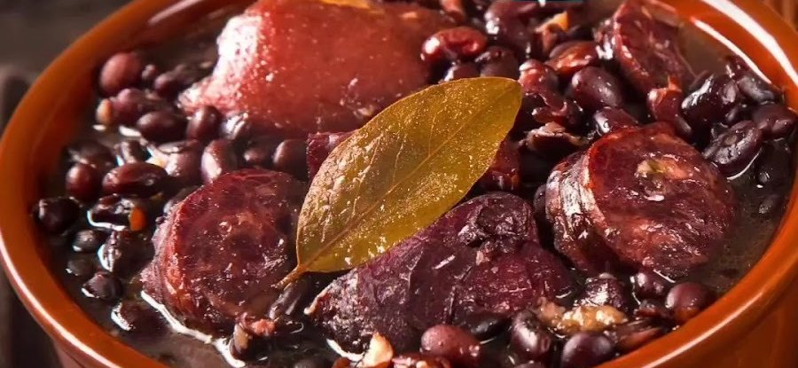

Carro-chefe
Parmegiana
Filé, frango ou berinjela, coberta de molho e queijo. Do Mini de R$ 54,00 à travessa para quatro.
Desde 2023 Free Shop · Rio Vermelho
A “recriação do botequim tradicional” no Rio Vermelho: parmegiana em quatro versões, Oswaldo Aranha, filé à Francesa e feijoada no fim de semana, no almoço de todo dia. Monte sua encomenda aqui e retire no balcão.

Por onde começar
Base, versão e tamanho, com o preço na hora e a mensagem pronta.
Montar agoraCardápio 2026Mais de 160 itens com busca, no lugar do PDF de 5 MB.
Abrir o cardápioAlmoçoBrasileirinhos de 2ª à 6ª, feijoada de sexta a domingo.
Ver os executivosRetiradaA sacola soma tudo e vai para o WhatsApp da casa.
Como funcionaAssinatura da casa
Filé, frango ou berinjela; tradicional, Boteco, Provoleta ou 3 Queijos; Mini para um, Engravatado para um ou dois, travessa para três ou quatro. São 27 combinações no cardápio da casa, e aqui o preço aparece na hora.
“Quer fugir das filas e experimentar o melhor Parmegiana de Salvador? Estamos aqui te esperando!”Sr. Boteco, no Instagram (18/09/2026)Todas as versões e preços
Berinjela sai na versão tradicional.
Na sacola! Confira embaixo da tela e mande pelo WhatsApp.
Preços do cardápio 2026 da casa. “Mude seu Parmegiana para Especial por +25,00”: peça na mensagem.
Da cozinha
É assim que o próprio Sr. Boteco descreveu a cozinha no aniversário de um ano. Três portas de entrada:

Filé, frango ou berinjela, coberta de molho e queijo. Do Mini de R$ 54,00 à travessa para quatro.

Filé à Oswaldo Aranha, à Francesa, Frango à Cubana e Bife à Cavalo, em Mini, Engravatado ou travessa.

Às sextas, sábados e domingos, com o Bobó de Camarão. A partir de R$ 47,00 na versão Mini.
Almoço executivo
Os executivos se chamam Engravatados. Os Brasileirinhos (prato comercial com arroz, feijão, fritas e farofa) saem de segunda a sexta, a partir de R$ 40,00.
Dias e horário do cardápio 2026 e da ficha da casa no Google (11h30 às 15h). Feriados: confirme pelo WhatsApp.
Petiscando
O cardápio tem voz própria. Seis petiscos, com a descrição como a casa escreveu:
“Queijo coalho como você nunca viu, parece pipoca, ac. melaço”
R$ 58,00“Calabresa acebolada flambada na cachaça ac. torradas e uma Senhora farofa”
R$ 46,00“Mini torta de bacalhau gratinada, ac. uma Senhora farofa”
R$ 88,00“Carne bovina cozida no molho de cerveja ac. torradas e uma Senhora farofa”
R$ 52,00“Charque acebolado, aipim cozido puxado na manteiga e queijo coalho refinadamente empanado”
R$ 78,00“Batata frita com coalho e fumeiro crispy, maçaricada”
R$ 55,00No PDF, a seção se chama “Petiscando (Noite)”. O horário da noite não está publicado: confirme pelo WhatsApp. Petiscos, bolinhos e biritas
Quem já sentou no salão
O restaurante é ótimo, comida deliciosa, farta e com ótimos preços. A parmegiana com provolone é maravilhosa, para mim, a melhor parmegiana do cardápio. […] O filé Oswaldo Aranha é outra opção deliciosa, a farofa que acompanha é muito boa!
Comida excelente, bem servida, atendimento cordial feito pelo próprio Dono. […] O ambiente traduz bem o nome, estilo boteco e com poucas mesas. Recomendo e vou voltar
Pratos deliciosos! Menu com muitas opções para todos os gostos. A Parmegiana e a Feijoada um show a parte, são as melhores de Salvador! Atendimento excelente, local climatizado, vou sempre que possível! Nota 10 !
Tem gosto de comida caseira. Decoração e atendimento convidativos... você sabe que vai comer uma boa comida boteca. […] Ótimo lugar para um almoço tranquilo.
A comida estava absolutamente deliciosa, o serviço foi amigável e atencioso, e o proprietário fez de tudo para garantir que tivéssemos uma ótima experiência, inclusive explicando o cardápio em inglês. […] A parmegiana estava excepcional
A parmegiana estava incrível, um dos melhores pratos que já experimentei no Brasil. O dono também foi ótimo, foi um prazer jantar em um lugar tão agradável.
Galeria
Encomenda para retirada
A casa já faz “encomenda para retirada na loja”. Com o site, o pedido chega somado e organizado no WhatsApp, sem ninguém precisar copiar item por item do PDF.
Dúvidas frequentes
Sim. O Sr. Boteco faz encomenda para retirada na loja: monte a sacola no site e mande pelo WhatsApp (71) 99963-6969. A casa confirma o horário.
Pelos aplicativos: “Delivery no 99Food, iFood e encomenda para retirada na loja”, como a casa publicou. Bairros e taxas aparecem no app.
A ficha da casa no Google mostra almoço todos os dias, das 11h30 às 15h. Para a noite e feriados, confirme pelo WhatsApp.
Mini Engravatado é individual; o Engravatado serve uma ou até duas pessoas; a travessa serve três ou até quatro.
Feijoada Carioca e Bobó de Camarão saem às sextas, sábados e domingos, segundo o cardápio 2026.
Não estão publicadas. Pergunte pelo WhatsApp ao fazer a encomenda.
Encomende
Monte a sacola, mande pelo WhatsApp da casa e passe no Free Shop para retirar. Sem comissão de aplicativo.